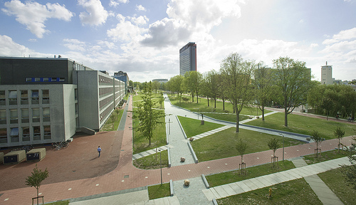

QIP 2018 will be hosted in Delft in The Netherlands by QuTech at Delft University of Technology.
The international annual Quantum Information Processing (QIP) series is the premier meeting for theoretical quantum information research. Since 1998, the conference has featured breakthroughs by the leaders in the disciplines of computing, cryptography, information theory, mathematics, and physics. The scientific objective of the series is to gather the theoretical quantum information community to present and discuss the latest groundbreaking work in the field.
The Industry Expo, taking place from 15.00-17.45 on Wednesday afternoon, will have booths and presentations from our sponsors Microsoft, Rigetti, IBM, Google and QuTech.
The poster sessions will take place on Monday and Tuesday, from 16.50 – 18.30 am.
Click here for the QIP 2018 photos
Carl Caves | University of New Mexico
Title: Quantum Gerrymandering: Positivity, Bias, and Anisotropy Among Quantum States
Boaz Barak | Harvard University
Title: Entangling Algorithms and Proofs
John Martinis | Google/UCSB
Title: The Quantum Supremacy Benchmark: Improving Qubit Quantity and Quality at the Same Time
Michael Bremner | University of Technology, Sydney
Title: The Complexity of Quantum Sampling Problems
Ronald de Wolf | QuSoft, CWI and University of Amsterdam
Title: Quantum Learning Theory
Christian Schaffner | CWI/QuSoft, Amsterdam
Title: Quantum Cryptography beyond Quantum Key Distribution
Wolfgang Lechner | IQOQI, Innsbruck
Title: Quantum Simulation
You can find the tutorial schedule here.
For a list the accepted talks, click here.
Instructions for speakers
If you are a speaker, please be aware that all talks at QIP will be recorded and made publicly available. Should you not wish to be recorded, please inform events@tudelft.nl by January 10th at the latest. No email from you implies consent.
Presenters are requested to upload their PowerPoint presentation in time and check it, at the latest, in the break before the session. In case of using your own laptop make sure you check it before your session. Students are present for assistance.
Instructions for poster presenters
The maximum poster size that can be used is A0 vertical (90 cm wide by 120 cm high). Mounting material is available.
Posters for the Rigetti Poster Session can be mounted on Monday, between 10.00 am – 15.50 pm, before the poster sessions start. The Rigetti poster sessions are from 16.50 – 18.30 pm.
The posters for Poster Session 2 can be mounted on Tuesday, between 10.00 am – 15.50 pm, before the poster sessions start. The poster sessions are from 16.50 – 18.30 pm.
All posters should be removed directly after each poster session. Please, leave the numbers on the boards after the Rigetti poster sessions! All posters that are left behind will be disposed of!
Just like last year, there will be mentoring sessions, for a small number of participants (7 students per table). Discussion at each table is meant to be self-directed and open ended, with the aim of giving students an opportunity to draw on the expertise of the mentors. The mentoring sessions will be held during the coffee break in the mornings from
10:10 – 10:40 am, and will be held in Commission room 2 (Commissiekamer 2). There will be coffee and snacks available in the room.
Please meet between 10:00 and 10:05 am at the registration desk (ground floor) on the day you are participating and we will proceed to Commission room 2 from there.
Schedule of Mentors
Tuesday, January 16th, 10:00 am
Wednesday, January 17th, 10:00 am
Friday, January 19th, 10:00 am